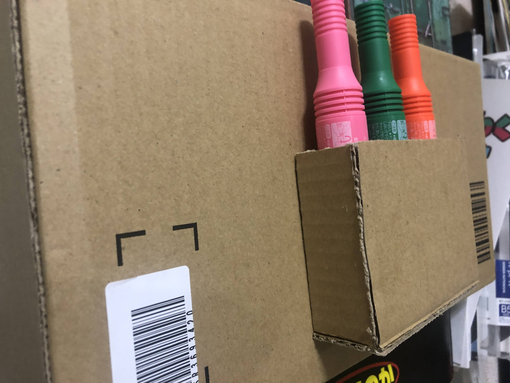

無機能単体読了材料
こんばんは。零阪です。
早速ですがこの動画面白すぎませんか。すっごく突き刺してる。（私のイメージする）陸軍学校を出た人たちから出る言葉じゃない。良い...
というわけで今日はダンボール工作動画の振り返りです。まだ完結してないのでとりあえず上げ終わってるところまで。
えー、尺の件はすみませんでした。設計パートを長くしすぎました。現在編集中の動画は設計パートの話してる内容が本編に載せるほどでもなかったので設計パートはほぼ全カットです。
とにかく余計な内容話しまくっていますね。あれ8割方無視しても差し支えありません。
あの動画を撮っている間ほとんど水分を取らなかったせいで熱中症寸前にまでなりました。実際問題作業中の記憶が概ね飛んでますし、データが飛んでることにすら気づいてないときがちらほら...（笑）
でもなんだかんだで作ってて楽しかったです。現物がいま真後ろにあるんですが、ピンクと黒のコントラストが結構きれいなんですねこれ。
あれに携帯を入れると丁度いい重さになるしなんだかんだで良いものが出来上がったと思います。
まあこれ以上言うとレビュー編で言うことがなくなるので違うことを話しますか。
またダンボール工作をしました。片方は動画にします。（動画の撮り方をガラッと変えたのでおそらくかなり見やすい構成になります。）
もう片方は動画にするほどでもないのでここで取り上げてしまいましょう。これです。

左の箱はダンボールの端材や道具が入っている箱です。この箱にペン入れをくっつけました。これでとりあえずペンは箱を開けずに取れるようになりました。
今後もいろんな物を取り付けていく方針です。（ex.折りたたみ式携帯用三脚の収納ケース）乞うご期待！
ただ、箱自体もちゃんと補強しなきゃいけませんね。必要に応じてやっていきます。
この記事の時点で上がっている動画を埋め込んでおきます。よければここから御覧ください。
話は変わりまして、Youtubeのあなたへのおすすめがちょこちょこおかしい（？）話。
Youtubeのあなたへのおすすめは、同じチャンネルでも違う動画を出して飽きさせない工夫がされているんですが、一時期Youtubeのあなたへのおすすめで何回も勧められた動画があります。それがこれ。
どう見ても平壌運転です。ありがとうございました。
この動画がおすすめに出まくっていた時期に適当に動画を見るときには無意識に何回も見てしまいました。これは韓国に行くときにはちゃんと韓国の朝鮮語を使うようにしなきゃいけないですね...
南北で単語が違ったりするらしいので、もし間違えてガッツリ北の朝鮮語で喋ってしまえば、通じなければ気まずく、通じれば公安がやってくる確率が高いという...本当に韓国に行くときには気をつけます。
話の切れ目がだんだんわからなくなってきました。いや本当に。
あ、それでですね。次回の動画の進捗状況なんですが、6分弱です。
部品は全部切り出し終わってますね。あとは塗って組み立てるだけ...と思いきや事件が発生しています。
何が起きているかは前編をお楽しみに。それでは、零阪でした。Youtubeチャンネルの登録を宜しくお願いします！
Tweet
記事一覧に戻る
Consoles